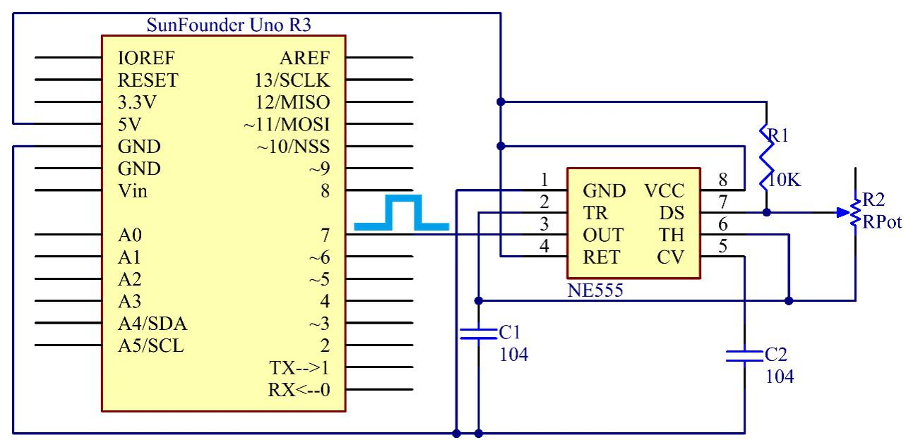

Lesson 12 NE555 Timer¶
Introduction¶
The NE555 Timer, a mixed circuit composed of analog and digital circuits, integrates analog and logical functions into an independent IC, thus tremendously expanding the applications of analog integrated circuits. It is widely used in various timers, pulse generators, and oscillators. In this experiment, the SunFounder Uno board is used to test the frequencies of square waves generated by the 555 oscillating circuit and show them on Serial Monitor.

{kind=link}
Experimental Principle¶
555 IC
The 555 IC was originally used as a timer, hence the name 555 time base circuit. It is now widely used in various electronic products because of its reliability, convenience, and low price. The 555 is a complex hybrid circuit with dozens of components such as a divider, comparator, basic R-S trigger, discharge tube, and buffer.
Its pins and their functions:

As shown in the picture, the pins are set dual in-line with the 8-pin package.
Pin 1 (GND): the ground
Pin 2 (TRIGGER ): when the voltage at the pin reduces to 1/3 of
the VCC (or the threshold defined by the control board), the output terminal sends out a High level
Pin 3 (OUTPUT): outputs High or Low, two states 0 and 1 decided
by the input electrical level; maximum output current approx. 200mA at High
Pin 4 (RESET): when a Low level is received at the pin, the timer
will be reset and the output will return to Low level; usually connected to positive pole or neglected
Pin 5 (CONTROL VOLTAGE): to control the threshold voltage of the
chip (if it skips connection, by default, the threshold voltage is 1/3 VCC and 2/3 VCC)
Pin 6 (THRESHOLD): when the voltage at the pin increases to 2/3
VCC (or the threshold defined by the control board), the output terminal sends out a High level
Pin 7 (DISCHARGE): output synchronized with Pin 3, with the same
logical level; but this pin does not output current, so pin 3 is the real High (or Low) when pin 7 is the virtual High (or Low); connected to the open collector (OC) inside to discharge the capacitor
Pin 8 (VCC): positive terminal for the NE555 timer IC, ranging
+4.5V to +16V
The NE555 timer works under the monostable, astable and bistable
modes. In this experiment, apply it under the astable mode, which means it works as an oscillator, as shown below:
{kind=link}
Connect a resistor R1 between the VCC and the discharging pin DS, another resistor between pin DS and the trigger pin TR which is connected to the threshold pin TH and then to the capacitor C1. Connect the RET (pin 4) to VCC, CV (pin 5) to another capacitor C2 and then to the ground.
Working process:
The oscillator starts to shake once the circuit is power on. Upon the energizing, since the voltage at C1 cannot change abruptly, which means pin 2 is Low level initially, set the timer to 1, so pin 3 is High level. The capacitor C1 charges via R1 and R2, in a time span:
Tc=0.693(R1+R2)
When the voltage at C1 reaches the threshold 2/3Vcc, the timer is reset and pin 3 is Low level. Then C1 discharges via R2 till 2/3Vcc, in a time span:
Td=0.693(R2)
Then the capacitor is recharged and the output voltage flips again:
Duty cycle D=Tc/(Tc+Td) x 100%
Since a potentiometer is used for resistor, we can output square wave signals with different duty cycles by adjusting its resistance. But R1 is a 10K resistor and R2 is 0k-10k, so the range of the ideal duty cycle is 66.7%-100%. If you want another else, you need to change the resistance of R1 and R2.
Dmin=(0.693(10K+0K))/(0.693(10K+0K)+0.693x0k) x100%=100%
Dmax=(0.693(10K+10K))/(0.693(10K+10K)+0.693x10k) x100%=66.7%
Experimental Procedures¶
Step 1: Build the circuit

Step 2: Open the code file
Step 3: Select correct Board and Port
Step 4: Upload the sketch to the SunFounder Uno board
After uploading, open the Serial Monitor and you will see the following window.

Code¶
Code Analysis 12-1 Calculate the duty cycle¶
void loop()
{
duration1 = pulseIn(ne555, HIGH); //Reads a pulse on ne555
duration2 = pulseIn(ne555, LOW); //Reads a pulse on ne555
dc = float (duration1) / (duration1 + duration2) \* 100;
Serial.print("Duty cycle: ");
Serial.print(dc); //print the length of the pulse on the serial monitor
Serial.print(" %");
Serial.println(); //print an blank on serial monitor
delay(500); //wait for 500 microseconds
}
Read a pulse waits for the ne555(pin 7) from HIGH to LOW firstly, then read a pulse waits for pin 7 from LOW to HIGH.
so the range of the ideal duty cycle dc is float (duration1) / (duration1 + duration2) * 100;
pulseIn()¶
[Advanced I/O]
Description
Reads a pulse (either HIGH or LOW) on a pin. For example, if value is HIGH, pulseIn() waits for the pin to go from LOW to HIGH, starts timing, then waits for the pin to go LOW and stops timing. Returns the length of the pulse in microseconds or gives up and returns 0 if no complete pulse was received within the timeout.
The timing of this function has been determined empirically and will probably show errors in longer pulses. Works on pulses from 10 microseconds to 3 minutes in length.
Syntax
pulseIn(pin, value)
pulseIn(pin, value, timeout)
Parameters
pin: the number of the pin on which you want to read the pulse. (int)
value: type of pulse to read: either HIGH or LOW. (int)
timeout (optional): the number of microseconds to wait for the pulse to start; default is one second (unsigned long)
Returns
the length of the pulse (in microseconds) or 0 if no pulse started before the timeout (unsigned long)